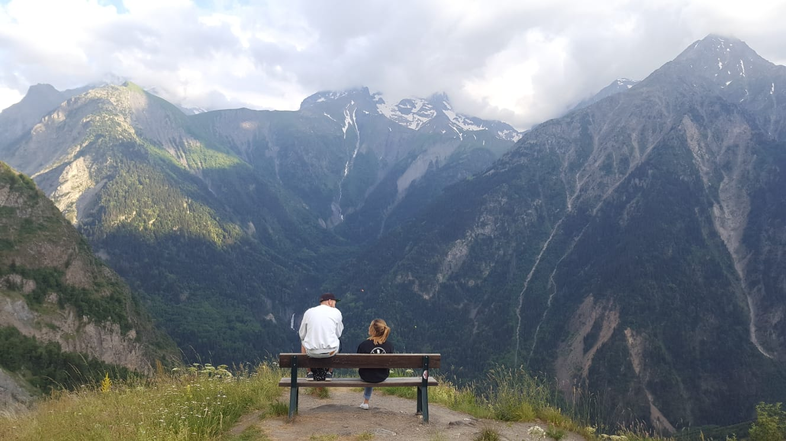
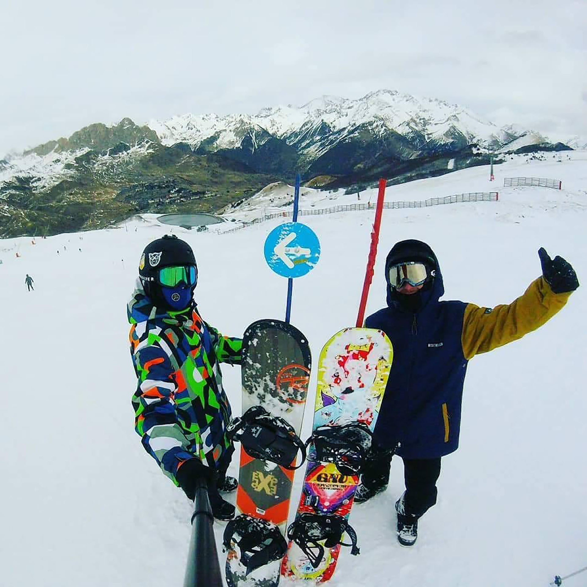
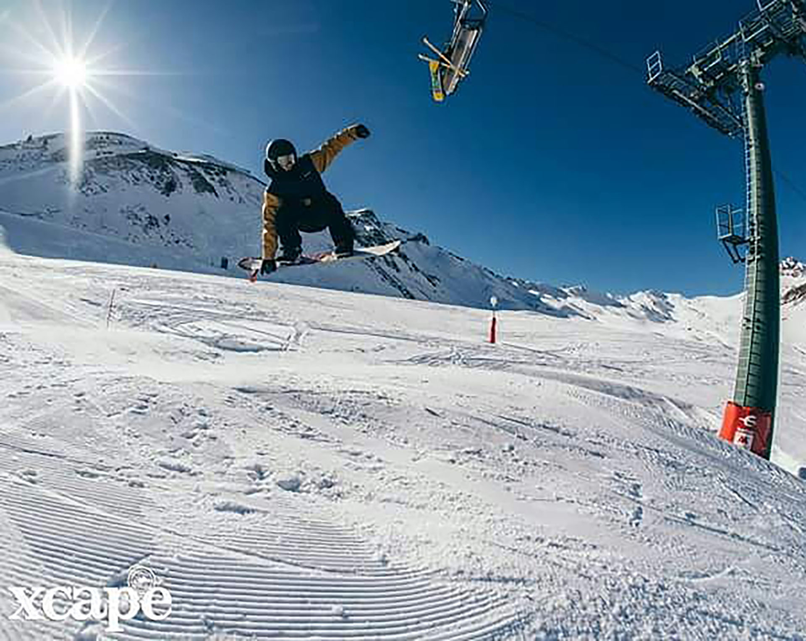
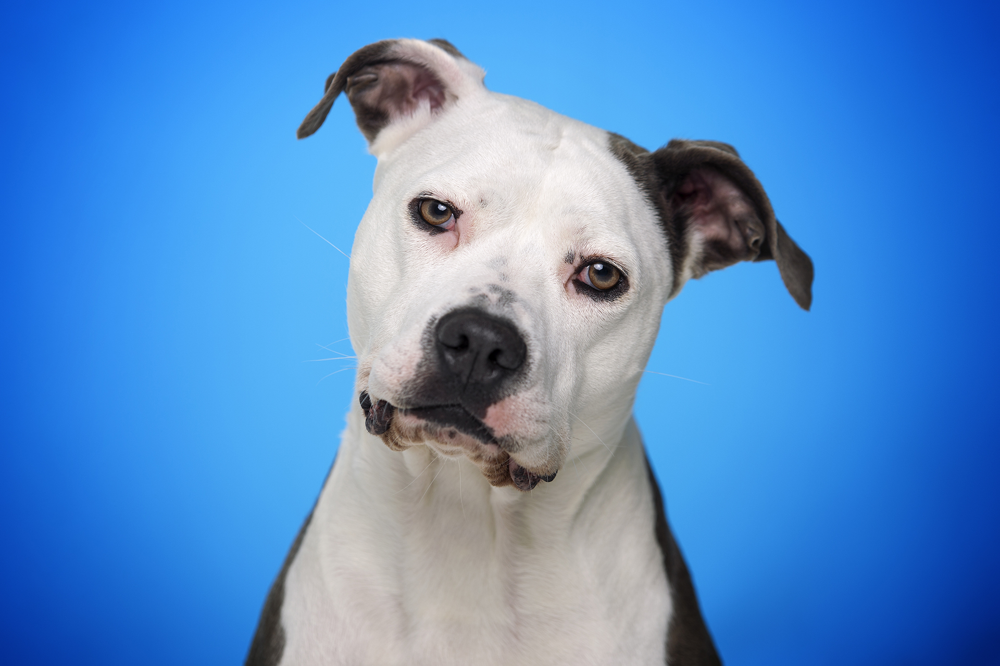
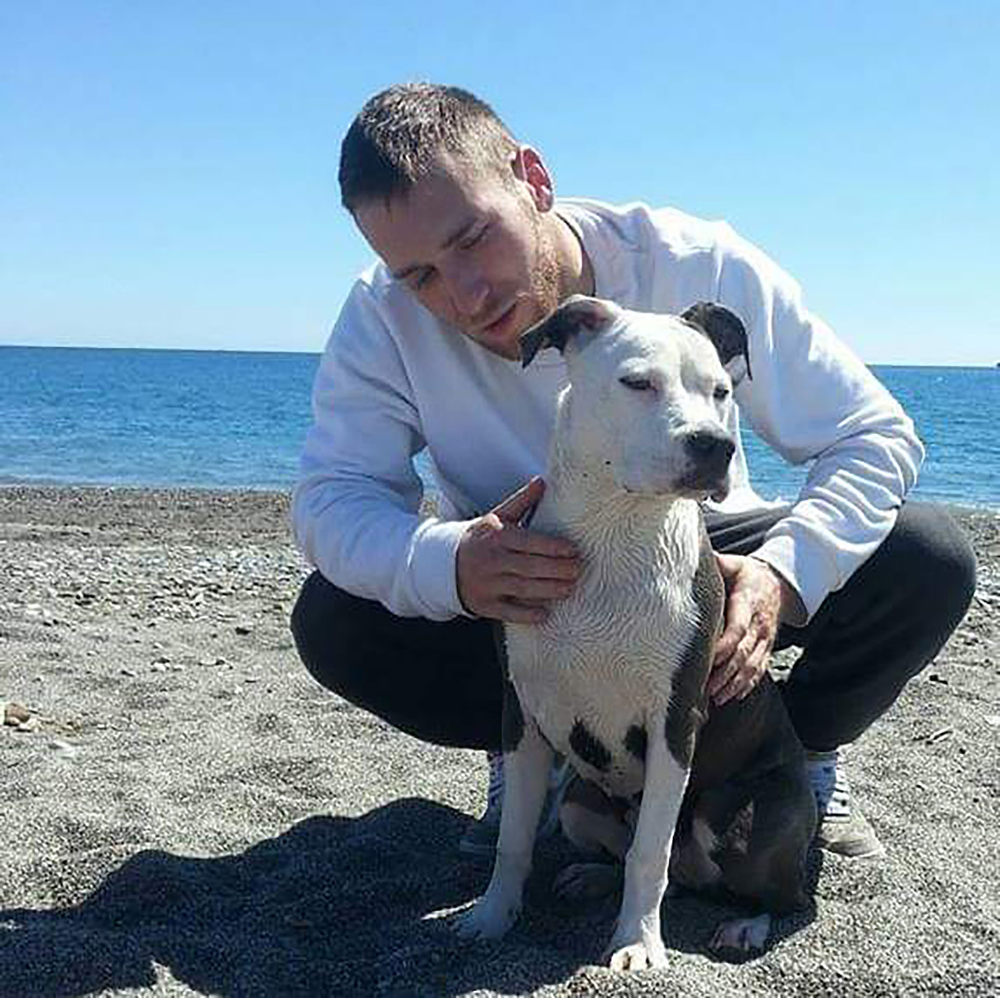

Procedencia
Me llamo Pedro González Recio, soy de Madrid, España y nací en La Paz en 1993. De pequeño viví en El Escorial sitio en el que volvería a vivir. Más tarde me mude a Boadilla del Monte donde estuve 10 años. Actualmente vivo en Brunete pero espero que un futuro pueda vivir fuera de España o en su defecto viajando.
Estudios
Me ha costado mucho encontrar algo que realmente me gustara, he dado muchos tumbos por varios grados y ninguno era lo que pensaba asique los he terminado dejando, pero de todos he aprendido cosas que se que terminaré usando.
- - Grado Medio de Electromecánica: Realización de operaciones de mantenimiento, montaje de accesorios y transformaciones en áreas de mecánica, hidráulica, neumática y electricidad del sector de automoción.
- - Grado Medio Carrocería: Realización de operaciones de reparación, montaje de accesorios y transaformaciones del vehículo en el área de carrocería, bastidor, cabina y equipos o aperos.
- - Grado Medio de Artes Plásticas y Diseño: La finalidad de estos estudios es formarte para adquirir las técnicas y el conocimiento de los materiales y herramientas necesarias para hacer las tareas propias del oficio, teniendo en cuenta tanto las técnicas artísticas más actuales como las artesanas clásicas.
- - Prueba de Acceso a Grado Superior (equivalente a Bachillerato).
Y el más importante, el que más me ha enganchado y del que espero poder vivir:
- - Grado Superior de Animación 3D, Juegos y Entornos Interactivos: En este Grado se capacita al alumno para generar animaciones 2D y 3D para producciones audiovisuales y desarrollar productos audiovisuales multimedia interactivos, integrando los elementos y fuentes que intervienen en su creación y teniendo en cuenta sus relaciones, dependencias y criterios de interactividad, a partir de parámetros previamente definidos.
Programas que utilizo
Estos son algunos programas que utilizamos en el Grado. Aún no soy experto en ninguno de ellos pero espero que algún día pueda decir lo contrario.
- - Autodesk Maya: Programa informático dedicado al desarrollo de gráficos 3D por ordenador, efectos especiales y animación.
- - Autodesk MudBox: Software de modelado 3D, texturizado y pintura digital.
- - Unity: Programa con el que se desarrollan videojuegos, con acabado profesional, para diversas plataformas mediante un editor y scripting.
- - Toon Boom Harmony: Software que se utiliza en la industria de la televisión y el cine de animación 2D-3D.
- - Adobe After Effects: Programa destinado para la creación o aplicación en una composición, así como la realización de gráficos profesionales en movimiento y efectos especiales.
- - Adobe InDesing: Programa utilizado para el diseño editorial.
- - Adobe Illustrator: Editor de gráficos vectoriales destinado a la creación artística de dibujo y pintura para ilustración como rama del arte digital aplicado a la ilustración técnica o el diseño gráfico, entre otros.
- - Adobe Photoshop: Editor de gráficos rasterizados. Usado principalmente para el retoque fotográfico y gráficos. También lo utilizamos para dibujar en Concept Art.
- - ZBrush: Software de modelado 3D, escultura y pintura digital, sobre todo para modelado orgánico.
- - Notepad: Editor de texto y de código fuente libre con soporte para varios lenguajes de programación.
Aspiraciones
Principalmente me gustaría terminar este grado habiendo aprendido lo máximo posible, que para mí es lo más fundamental ahora mismo. Después me iría fuera, porque el idioma es algo necesario para todo en general y más en este campo. Una vez me establezca en algún sitio y aumente mi portfolio buscaría trabajo de lo más me guste que en principio sería para modelar o texturizar, o si dios quiere espero que el trabajo me busque a mí. Pero obviamente no es lo único que quiero hacer, tengo muchas cosas pendientes que espero poder realizar una vez me asiente.
Fotos y videos descriptivos
Paisaje en Los Alpes
Andorra
TailGrap
Boardercross en Andorra
Mi Churri
Motril su primer día de playa

Atardecer en Cádiz.

Paracaidismo
Paracaidismo en Lillo